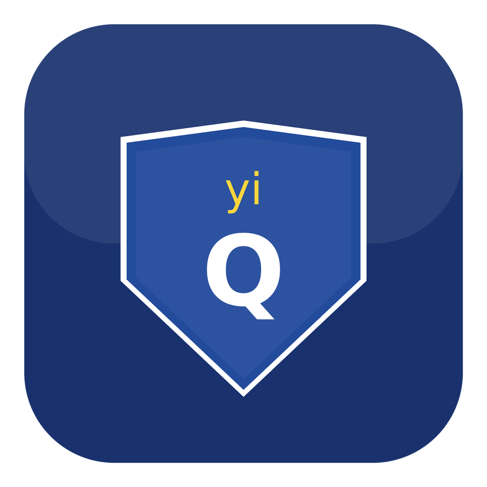

macOS 防误触 Cmd+Q 守护工具
再也不怕手滑退出应用了
一个简单的工具，解决一个恼人的问题
1.5 秒内连按两次 Cmd+Q 才退出。单次误触完全无效，不打断你的工作流。
每次 Cmd+Q 弹出确认对话框，取消后焦点自动回到原应用。
yiQGuard 自身不可被 Cmd+Q 退出。退出需二次确认，不会静默消失。
设置面板中可视化配置快捷键。修改修饰键 + 字母，保存即生效。
使用 CGEventTap 在系统层拦截键盘事件，保护所有应用，无论何时打开。
无 Dock 图标，菜单栏常驻。CPU 占用趋近于零，你感觉不到它的存在。
无论在哪个应用，yiQGuard 在系统层第一时间拦截这个按键。
屏幕浮现提示，原始的退出事件被吞掉——应用安然无恙。
1.5 秒内再按一次 → 确认退出。不再按 → 什么都不发生，继续工作。
免费、开源、无广告、无追踪
支持 macOS 12.0+ | Python 3.9 ~ 3.13 | Apple Silicon & Intel
右键点击 yiQGuard.app → 选择"打开" → 点击"打开"。仅首次需要。或终端执行：xattr -cr /Applications/yiQGuard.app
不需要。下载的 .app 是自包含的，内含 Python 运行时和所有依赖。直接双击运行。
菜单栏点击 → "退出 yiQGuard" → 确认弹窗。或快捷键 Ctrl+Option+Shift+Q。注意：Cmd+Q 无法退出 yiQGuard（这是自我保护）。
几乎不影响。yiQGuard 仅监听键盘事件（不录屏、不读取内容），CPU 占用趋近于 0，内存约 30MB。
完全不收集。无网络请求、无追踪、无分析。配置保存在本地 ~/.yiq-guard/，代码 100% 开源可审查。